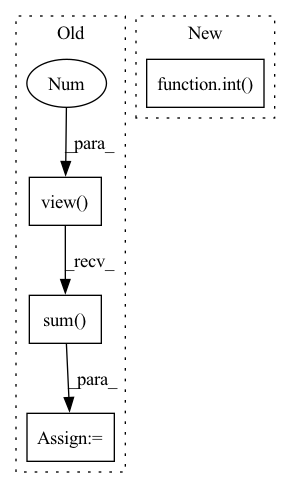

Pattern ID :34119
Before Change
// world_size * (2C + 1) -> world_size * C, world_size * C, world_size * 1
mean_all, invstd_all, count_all = torch.split(combined, num_channels, dim=1)
size = count_all.view(-1 ).long().sum()
if size == 1:
raise ValueError("Expected more than 1 value per channel when training, got input size {}".format(size))
// calculate global mean & invstdAfter Change
input = input.contiguous()
weight = weight.contiguous()
size = int( input.numel() // input.size(1))
if size == 1 and world_size < 2:
raise ValueError("Expected more than 1 value per channel when training, got input size {}".format(size))
// calculate mean/invstd for input.In pattern: SUPERPATTERN
Frequency: 3
Non-data size: 4
Instances Fragment ID: 97518165
Project Name: pytorch/pytorch
Commit Name: d30f4d1dfd5237d89834363ce2cff9de4ee92811
Time: 2021-03-03
Author: 24860335+xwang233@users.noreply.github.com
File Name: torch/nn/modules/_functions.py
M Class Name: SyncBatchNorm
N Class Name: SyncBatchNorm
M Method Name: forward(10)
N Method Name: forward(10)
M Parent Class: Function
N Parent Class: Function
M File Name: torch/nn/modules/_functions.py
N File Name: torch/nn/modules/_functions.py
M Start Line: 10
M End Line: 49
N Start Line: 10
N End Line: 51
Before Change
labels = labels[:, :, 0] // (C, batch_size)
mode_labels = labels[:, :, 0].mode(keepdim=True)[0] // (C, 1)
_labels = _labels.view( 1, -1 ) // (1, batch_size)
other_idx1 = ~_labels.eq(mode_labels) // (C, batch_size)
other_idx = torch.bitwise_and(other_idx1, labels.eq(_labels)) // (C, batch_size)
condition1 = other_idx.sum(dim=-1, keepdim=True) // (C, 1)
other_idx = torch.where(condition1, other_idx, other_idx1) // (C, batch_size)
min_values, min_idx = torch.where(other_idx, values, values.max()).min(dim=-1)[0] // (C)
min_labels = labels.gather(dim=1, index=min_idx.unsqueeze(1)).flatten() // (C)After Change
idx_list = condition2.nonzero().flatten().tolist()
idx_list = sorted(idx_list, key=lambda idx: float(values[idx][mode_idx[idx]].min()))[:self.top_n_neurons]
neuron_dict[layer] = {int(idx): int( mode_labels[idx]) for idx in idx_list}
prints("{green}{layer:<20}: {reset}".format(layer=layer, **ansi), indent=4)
prints(neuron_dict[layer], indent=8)
return neuron_dict Fragment ID: 97518166
Project Name: ain-soph/trojanzoo
Commit Name: 1684c28ef38502abb83d37beb845b69007e33274
Time: 2020-07-07
Author: ain-soph@live.com
File Name: trojanzoo/defense/backdoor/abs.py
M Class Name: ABS
N Class Name: ABS
M Method Name: find_min_max(3)
N Method Name: find_min_max(3)
M Parent Class: Defense_Backdoor
N Parent Class: Defense_Backdoor
M File Name: trojanzoo/defense/backdoor/abs.py
N File Name: trojanzoo/defense/backdoor/abs.py
M Start Line: 210
M End Line: 225
N Start Line: 234
N End Line: 254
Before Change
norm2 = norm1
else:
nelec2 = input2.shape[1]/ndim
input2 = input2.view(-1 ,nelec2,ndim)
norm2 = (input2**2).sum( -1) .unsqueeze(-1)
dist = norm1 + norm2.transpose(1,2) -2.0 * torch.bmm(input1,input2.transpose(1,2))
After Change
ndim = 3
nelec = int( input.shape[1]/ndim)
input = input.view(-1,nelec,ndim)
norm = (input**2).sum(-1).unsqueeze(-1)
dist = norm + norm.transpose(1,2) -2.0 * torch.bmm(input,input.transpose(1,2))
Fragment ID: 97518169
Project Name: nlesc-jcer/qmctorch
Commit Name: 367e2652236e20fd44c930c0364147f2315f419c
Time: 2019-06-26
Author: nicolas.gm.renaud@gmail.com
File Name: pyCHAMP/wavefunction/wave_modules.py
M Class Name: ElectronDistance
N Class Name: ElectronDistance
M Method Name: forward(2)
N Method Name: forward(3)
M Parent Class: torch.autograd.Function
N Parent Class: torch.autograd.Function
M File Name: pyCHAMP/wavefunction/wave_modules.py
N File Name: pyCHAMP/wavefunction/wave_modules.py
M Start Line: 51
M End Line: 75
N Start Line: 52
N End Line: 54